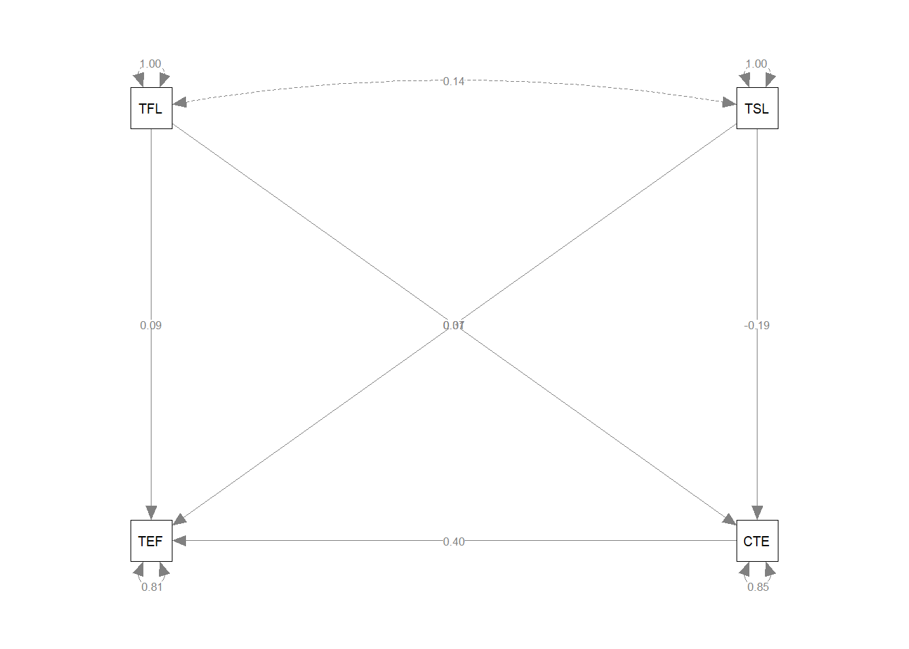
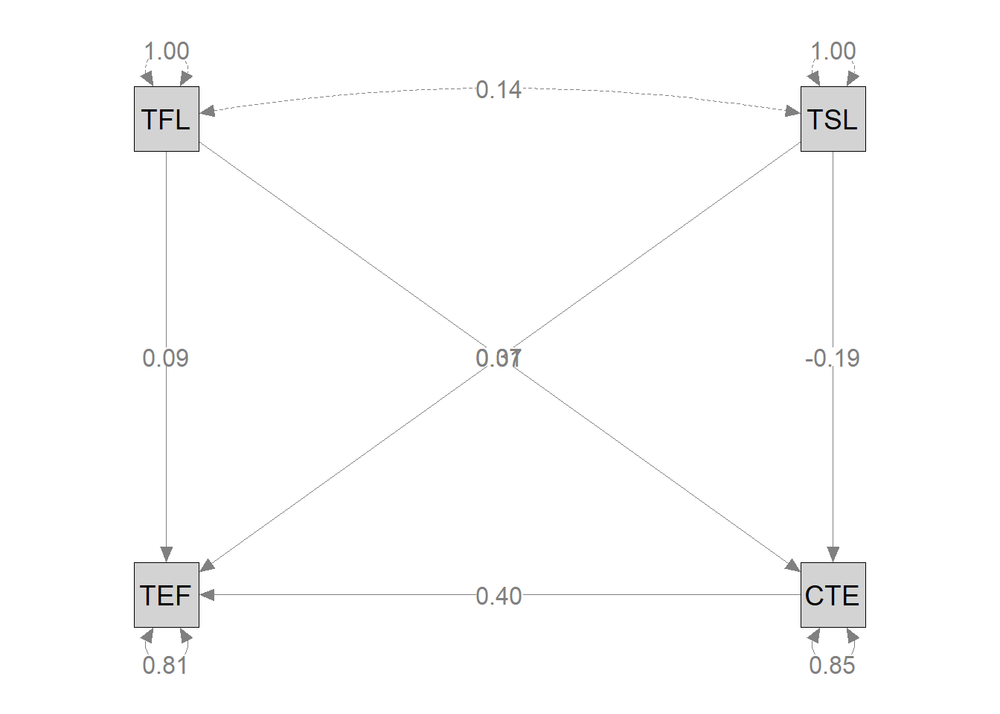
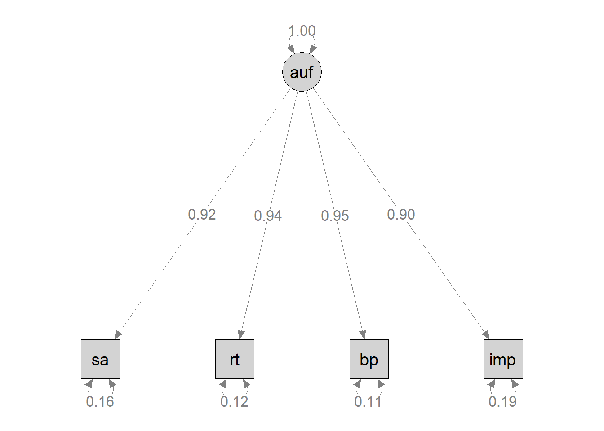
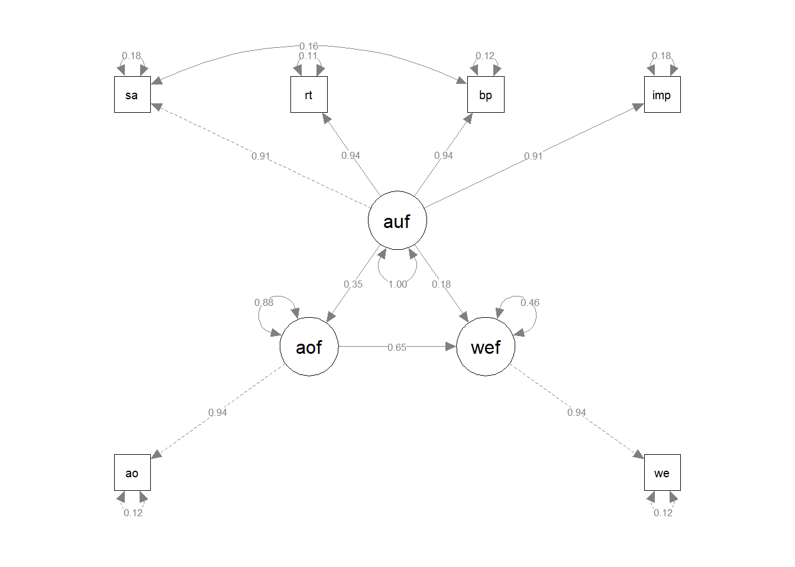
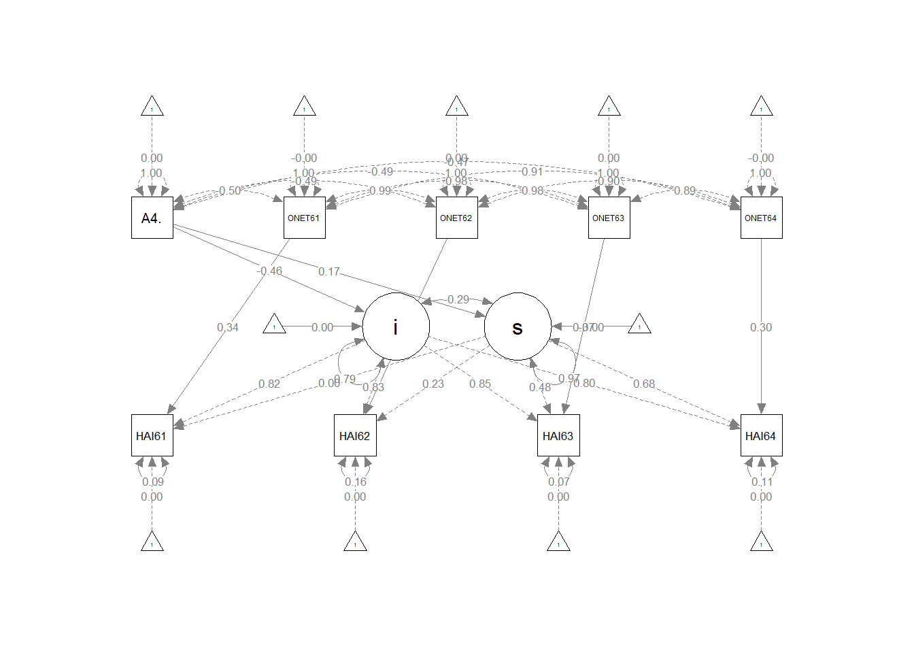

Last compiled: 2022-12-14 # Basic R
ตรวจสอบตำแหน่ง
getwd()## [1] "D:/OneDrive/09Rmarkdown/EdLearnR"Reading assignment : Kurt, T., Duyar, I., & Calik, T. (2012). Are we legitimate yet? A closer look at the casual relationship mechanisms among principal leadership, teacher self‐efficacy and collective efficacy. Journal of Management Development, 31, 71-86.
library(lavaan)
#correlation from article
regression.cor <- lav_matrix_lower2full(c(1.0,
0.14, 1.0,
0.34, -0.14, 1.0,
0.23, -0.03, 0.43, 1.0))
colnames(regression.cor) <- rownames(regression.cor) <- c("TFL", "TSL", "CTE","TEF")
regression.cor## TFL TSL CTE TEF
## TFL 1.00 0.14 0.34 0.23
## TSL 0.14 1.00 -0.14 -0.03
## CTE 0.34 -0.14 1.00 0.43
## TEF 0.23 -0.03 0.43 1.00#model syntax
regression.model <- '
TEF ~ TFL + TSL + CTE
CTE ~ TFL + TSL
'
#model fit
regression.fit <- sem(regression.model, sample.cov = regression.cor, sample.nobs = 813)
summary(regression.fit, rsquare = TRUE)## lavaan 0.6-12 ended normally after 1 iterations
##
## Estimator ML
## Optimization method NLMINB
## Number of model parameters 7
##
## Number of observations 813
##
## Model Test User Model:
##
## Test statistic 0.000
## Degrees of freedom 0
##
## Parameter Estimates:
##
## Standard errors Standard
## Information Expected
## Information saturated (h1) model Structured
##
## Regressions:
## Estimate Std.Err z-value P(>|z|)
## TEF ~
## TFL 0.092 0.034 2.688 0.007
## TSL 0.013 0.032 0.407 0.684
## CTE 0.401 0.034 11.712 0.000
## CTE ~
## TFL 0.367 0.033 11.242 0.000
## TSL -0.191 0.033 -5.865 0.000
##
## Variances:
## Estimate Std.Err z-value P(>|z|)
## .TEF 0.806 0.040 20.162 0.000
## .CTE 0.847 0.042 20.162 0.000
##
## R-Square:
## Estimate
## TEF 0.193
## CTE 0.151#diagram
library(semPlot)
semPaths(regression.fit,
whatLabels="STDE",
layout = "tree")
#adjust path
semPaths(regression.fit,
whatLabels="STDE",
layout = "tree",
style = "ram",
rotation = 1,
sizeMan = 7,
sizeLat = 7,
color = "lightgray",
edge.label.cex = 1.2,
label.cex = 1.3
)
Reading assignment : Kulophas, D., Hallinger, P., Ruengtrakul, A., & Wongwanich, S. (2018). Exploring the effects of authentic leadership on academic optimism and teacher engagement in Thailand. International Journal of Educational Management, 32(1), 27-45. https://doi.org/10.1108/IJEM-10-2016-0233
library(lavaan)
lower = '
1.000
0.859 1.000
0.873 0.882 1.000
0.816 0.854 0.852 1.000
0.281 0.319 0.297 0.301 1.000
0.369 0.363 0.343 0.363 0.628 1.000
'
au.cor = getCov(lower, names = c("sa", "rt", "bp","imp", "ao", "we"))
au.cor## sa rt bp imp ao we
## sa 1.000 0.859 0.873 0.816 0.281 0.369
## rt 0.859 1.000 0.882 0.854 0.319 0.363
## bp 0.873 0.882 1.000 0.852 0.297 0.343
## imp 0.816 0.854 0.852 1.000 0.301 0.363
## ao 0.281 0.319 0.297 0.301 1.000 0.628
## we 0.369 0.363 0.343 0.363 0.628 1.000au.cov = cor2cov(R = au.cor, sds = c(0.629, 0.341, 0.560,
0.318,0.284, 0.291 ))
au.cov## sa rt bp imp ao we
## sa 0.39564100 0.18424605 0.30750552 0.16321795 0.05019672 0.06754139
## rt 0.18424605 0.11628100 0.16842672 0.09260605 0.03089324 0.03602085
## bp 0.30750552 0.16842672 0.31360000 0.15172416 0.04723488 0.05589528
## imp 0.16321795 0.09260605 0.15172416 0.10112400 0.02718391 0.03359129
## ao 0.05019672 0.03089324 0.04723488 0.02718391 0.08065600 0.05190043
## we 0.06754139 0.03602085 0.05589528 0.03359129 0.05190043 0.08468100model = '
auf =~ sa + rt + bp + imp
'
#summary(onefactor)
results = sem(model, sample.cov=au.cov, sample.nobs=605)
summary(results, standardize=TRUE, fit.measures=TRUE)## lavaan 0.6-12 ended normally after 31 iterations
##
## Estimator ML
## Optimization method NLMINB
## Number of model parameters 8
##
## Number of observations 605
##
## Model Test User Model:
##
## Test statistic 6.596
## Degrees of freedom 2
## P-value (Chi-square) 0.037
##
## Model Test Baseline Model:
##
## Test statistic 2788.139
## Degrees of freedom 6
## P-value 0.000
##
## User Model versus Baseline Model:
##
## Comparative Fit Index (CFI) 0.998
## Tucker-Lewis Index (TLI) 0.995
##
## Loglikelihood and Information Criteria:
##
## Loglikelihood user model (H0) -65.721
## Loglikelihood unrestricted model (H1) -62.423
##
## Akaike (AIC) 147.443
## Bayesian (BIC) 182.684
## Sample-size adjusted Bayesian (BIC) 157.286
##
## Root Mean Square Error of Approximation:
##
## RMSEA 0.062
## 90 Percent confidence interval - lower 0.013
## 90 Percent confidence interval - upper 0.117
## P-value RMSEA <= 0.05 0.280
##
## Standardized Root Mean Square Residual:
##
## SRMR 0.005
##
## Parameter Estimates:
##
## Standard errors Standard
## Information Expected
## Information saturated (h1) model Structured
##
## Latent Variables:
## Estimate Std.Err z-value P(>|z|) Std.lv Std.all
## auf =~
## sa 1.000 0.576 0.917
## rt 0.554 0.013 41.403 0.000 0.319 0.938
## bp 0.918 0.022 42.514 0.000 0.529 0.945
## imp 0.497 0.014 36.824 0.000 0.287 0.902
##
## Variances:
## Estimate Std.Err z-value P(>|z|) Std.lv Std.all
## .sa 0.063 0.005 13.595 0.000 0.063 0.159
## .rt 0.014 0.001 12.085 0.000 0.014 0.121
## .bp 0.033 0.003 11.259 0.000 0.033 0.106
## .imp 0.019 0.001 14.283 0.000 0.019 0.187
## auf 0.332 0.023 14.687 0.000 1.000 1.000modificationIndices(results, minimum.value = 0)## lhs op rhs mi epc sepc.lv sepc.all sepc.nox
## 10 sa ~~ rt 0.025 0.000 0.000 -0.011 -0.011
## 11 sa ~~ bp 5.128 0.008 0.008 0.176 0.176
## 12 sa ~~ imp 4.665 -0.004 -0.004 -0.124 -0.124
## 13 rt ~~ bp 4.665 -0.004 -0.004 -0.202 -0.202
## 14 rt ~~ imp 5.128 0.002 0.002 0.149 0.149
## 15 bp ~~ imp 0.025 0.000 0.000 -0.011 -0.011library(semPlot)
semPaths(results,
whatLabels = "std",
layout = "tree",
style = "ram",
rotation = 1,
sizeMan = 7,
sizeLat = 7,
color = "lightgray",
edge.label.cex = 1.2,
label.cex = 1.3)
Reading assignment : Kulophas, D., Hallinger, P., Ruengtrakul, A., & Wongwanich, S. (2018). Exploring the effects of authentic leadership on academic optimism and teacher engagement in Thailand. International Journal of Educational Management, 32(1), 27-45. https://doi.org/10.1108/IJEM-10-2016-0233
library(lavaan)
lower = '
1.000
0.859 1.000
0.873 0.882 1.000
0.816 0.854 0.852 1.000
0.281 0.319 0.297 0.301 1.000
0.369 0.363 0.343 0.363 0.628 1.000
'
au.cor = getCov(lower, names = c("sa", "rt", "bp","imp", "ao", "we"))
au.cor## sa rt bp imp ao we
## sa 1.000 0.859 0.873 0.816 0.281 0.369
## rt 0.859 1.000 0.882 0.854 0.319 0.363
## bp 0.873 0.882 1.000 0.852 0.297 0.343
## imp 0.816 0.854 0.852 1.000 0.301 0.363
## ao 0.281 0.319 0.297 0.301 1.000 0.628
## we 0.369 0.363 0.343 0.363 0.628 1.000au.cov = cor2cov(R = au.cor, sds = c(0.629, 0.341, 0.560,
0.318,0.284, 0.291 ))
au.cov## sa rt bp imp ao we
## sa 0.39564100 0.18424605 0.30750552 0.16321795 0.05019672 0.06754139
## rt 0.18424605 0.11628100 0.16842672 0.09260605 0.03089324 0.03602085
## bp 0.30750552 0.16842672 0.31360000 0.15172416 0.04723488 0.05589528
## imp 0.16321795 0.09260605 0.15172416 0.10112400 0.02718391 0.03359129
## ao 0.05019672 0.03089324 0.04723488 0.02718391 0.08065600 0.05190043
## we 0.06754139 0.03602085 0.05589528 0.03359129 0.05190043 0.08468100model = '
auf =~ sa + rt + bp + imp
aof =~ ao
wef =~ we
wef~ aof + auf
aof ~ auf
ao ~~ .01*ao
we ~~ .01*we
sa ~~ bp
'
#summary(onefactor)
results = sem(model, sample.cov=au.cov, sample.nobs=605)
summary(results, standardize=TRUE, fit.measures=TRUE)## lavaan 0.6-12 ended normally after 51 iterations
##
## Estimator ML
## Optimization method NLMINB
## Number of model parameters 14
##
## Number of observations 605
##
## Model Test User Model:
##
## Test statistic 12.320
## Degrees of freedom 7
## P-value (Chi-square) 0.091
##
## Model Test Baseline Model:
##
## Test statistic 3203.520
## Degrees of freedom 15
## P-value 0.000
##
## User Model versus Baseline Model:
##
## Comparative Fit Index (CFI) 0.998
## Tucker-Lewis Index (TLI) 0.996
##
## Loglikelihood and Information Criteria:
##
## Loglikelihood user model (H0) -68.414
## Loglikelihood unrestricted model (H1) -62.254
##
## Akaike (AIC) 164.827
## Bayesian (BIC) 226.501
## Sample-size adjusted Bayesian (BIC) 182.054
##
## Root Mean Square Error of Approximation:
##
## RMSEA 0.035
## 90 Percent confidence interval - lower 0.000
## 90 Percent confidence interval - upper 0.067
## P-value RMSEA <= 0.05 0.739
##
## Standardized Root Mean Square Residual:
##
## SRMR 0.008
##
## Parameter Estimates:
##
## Standard errors Standard
## Information Expected
## Information saturated (h1) model Structured
##
## Latent Variables:
## Estimate Std.Err z-value P(>|z|) Std.lv Std.all
## auf =~
## sa 1.000 0.570 0.907
## rt 0.564 0.014 39.206 0.000 0.322 0.944
## bp 0.919 0.021 43.243 0.000 0.524 0.936
## imp 0.505 0.014 35.483 0.000 0.288 0.906
## aof =~
## ao 1.000 0.266 0.936
## wef =~
## we 1.000 0.273 0.939
##
## Regressions:
## Estimate Std.Err z-value P(>|z|) Std.lv Std.all
## wef ~
## aof 0.668 0.039 17.040 0.000 0.650 0.650
## auf 0.089 0.017 5.069 0.000 0.185 0.185
## aof ~
## auf 0.162 0.020 8.200 0.000 0.349 0.349
##
## Covariances:
## Estimate Std.Err z-value P(>|z|) Std.lv Std.all
## .sa ~~
## .bp 0.008 0.004 2.283 0.022 0.008 0.161
##
## Variances:
## Estimate Std.Err z-value P(>|z|) Std.lv Std.all
## .ao 0.010 0.010 0.124
## .we 0.010 0.010 0.118
## .sa 0.070 0.006 12.233 0.000 0.070 0.177
## .rt 0.013 0.001 10.154 0.000 0.013 0.110
## .bp 0.039 0.004 10.400 0.000 0.039 0.124
## .imp 0.018 0.001 13.648 0.000 0.018 0.179
## auf 0.325 0.023 14.309 0.000 1.000 1.000
## .aof 0.062 0.004 14.897 0.000 0.878 0.878
## .wef 0.034 0.003 12.198 0.000 0.459 0.459modificationIndices(results, minimum.value = 0)## lhs op rhs mi epc sepc.lv sepc.all sepc.nox
## 22 aof =~ sa 0.389 -0.031 -0.008 -0.013 -0.013
## 23 aof =~ rt 0.945 0.024 0.006 0.019 0.019
## 24 aof =~ bp 0.608 -0.031 -0.008 -0.015 -0.015
## 25 aof =~ imp 0.212 0.012 0.003 0.010 0.010
## 27 wef =~ sa 1.621 0.063 0.017 0.027 0.027
## 28 wef =~ rt 0.000 0.000 0.000 0.000 0.000
## 29 wef =~ bp 3.297 -0.072 -0.020 -0.035 -0.035
## 30 wef =~ imp 0.782 0.023 0.006 0.020 0.020
## 32 sa ~~ rt 1.268 0.003 0.003 0.089 0.089
## 33 sa ~~ imp 1.862 -0.003 -0.003 -0.081 -0.081
## 34 sa ~~ ao 4.744 -0.005 -0.005 -0.206 -0.206
## 35 sa ~~ we 6.261 0.006 0.006 0.237 0.237
## 36 rt ~~ bp 0.819 -0.002 -0.002 -0.087 -0.087
## 37 rt ~~ imp 0.832 -0.003 -0.003 -0.222 -0.222
## 38 rt ~~ ao 2.079 0.002 0.002 0.160 0.160
## 39 rt ~~ we 0.956 -0.001 -0.001 -0.109 -0.109
## 40 bp ~~ imp 2.038 0.003 0.003 0.103 0.103
## 41 bp ~~ ao 0.405 0.001 0.001 0.064 0.064
## 42 bp ~~ we 3.650 -0.004 -0.004 -0.194 -0.194
## 43 imp ~~ ao 0.036 0.000 0.000 -0.019 -0.019
## 44 imp ~~ we 0.726 0.001 0.001 0.085 0.085library(semPlot)
semPaths(results,
whatLabels = "std",
layout = "tree")
sessionInfo()## R version 4.2.2 (2022-10-31 ucrt)
## Platform: x86_64-w64-mingw32/x64 (64-bit)
## Running under: Windows 10 x64 (build 22621)
##
## Matrix products: default
##
## locale:
## [1] LC_COLLATE=English_United States.utf8
## [2] LC_CTYPE=English_United States.utf8
## [3] LC_MONETARY=English_United States.utf8
## [4] LC_NUMERIC=C
## [5] LC_TIME=English_United States.utf8
##
## attached base packages:
## [1] stats graphics grDevices utils datasets methods base
##
## other attached packages:
## [1] semPlot_1.1.6 lavaan_0.6-12
##
## loaded via a namespace (and not attached):
## [1] nlme_3.1-160 RColorBrewer_1.1-3 mi_1.1
## [4] tools_4.2.2 backports_1.4.1 bslib_0.4.1
## [7] utf8_1.2.2 R6_2.5.1 rpart_4.1.19
## [10] Hmisc_4.7-1 DBI_1.1.3 colorspace_2.0-3
## [13] nnet_7.3-18 tidyselect_1.2.0 gridExtra_2.3
## [16] mnormt_2.1.1 compiler_4.2.2 fdrtool_1.2.17
## [19] qgraph_1.9.2 cli_3.4.1 htmlTable_2.4.1
## [22] sass_0.4.2 scales_1.2.1 checkmate_2.1.0
## [25] psych_2.2.9 pbapply_1.6-0 sem_3.1-15
## [28] stringr_1.4.1 digest_0.6.30 pbivnorm_0.6.0
## [31] foreign_0.8-83 minqa_1.2.5 rmarkdown_2.18
## [34] base64enc_0.1-3 jpeg_0.1-9 pkgconfig_2.0.3
## [37] htmltools_0.5.3 lme4_1.1-31 lisrelToR_0.1.5
## [40] highr_0.9 fastmap_1.1.0 htmlwidgets_1.5.4
## [43] rlang_1.0.6 rstudioapi_0.14 jquerylib_0.1.4
## [46] generics_0.1.3 jsonlite_1.8.3 gtools_3.9.3
## [49] dplyr_1.0.10 zip_2.2.2 magrittr_2.0.3
## [52] OpenMx_2.20.7 Formula_1.2-4 interp_1.1-3
## [55] Matrix_1.5-1 Rcpp_1.0.9 munsell_0.5.0
## [58] fansi_1.0.3 abind_1.4-5 rockchalk_1.8.157
## [61] lifecycle_1.0.3 stringi_1.7.8 yaml_2.3.6
## [64] carData_3.0-5 MASS_7.3-58.1 plyr_1.8.8
## [67] grid_4.2.2 parallel_4.2.2 deldir_1.0-6
## [70] lattice_0.20-45 kutils_1.70 splines_4.2.2
## [73] knitr_1.41 pillar_1.8.1 igraph_1.3.5
## [76] boot_1.3-28 corpcor_1.6.10 codetools_0.2-18
## [79] reshape2_1.4.4 stats4_4.2.2 XML_3.99-0.12
## [82] glue_1.6.2 evaluate_0.18 latticeExtra_0.6-30
## [85] RcppParallel_5.1.5 data.table_1.14.4 png_0.1-7
## [88] vctrs_0.5.0 nloptr_2.0.3 gtable_0.3.1
## [91] assertthat_0.2.1 cachem_1.0.6 ggplot2_3.4.0
## [94] xfun_0.34 openxlsx_4.2.5.1 xtable_1.8-4
## [97] coda_0.19-4 glasso_1.11 survival_3.4-0
## [100] tibble_3.1.8 arm_1.13-1 cluster_2.1.4library(lavaan)
GW <- read.csv("D:/OneDrive/00Recent Draft/HAI64/Rgrowth/Zgrowth.csv", header = TRUE)
GW## HAI61 HAI62 HAI63 HAI64 ONET61 ONET62 ONET63 ONET64
## 1 -0.38644 -0.62489 -0.71049 -1.23544 1.09000 0.95000 0.98000 1.01000
## 2 2.71139 2.32171 1.97770 1.36977 1.60000 1.41000 1.20000 1.30000
## 3 1.77664 1.07951 1.23404 1.55060 0.87000 0.82000 0.79000 1.36000
## 4 0.99732 0.95302 1.48028 1.61780 1.94000 2.01000 1.73000 2.88000
## 5 -0.32597 -0.10962 -1.14116 -1.39727 0.16000 0.32000 0.04000 0.17000
## 6 1.32792 2.29512 2.10410 2.31256 -0.11000 -0.22000 -0.05000 -0.07000
## 7 -0.18390 0.22107 -0.04393 0.64661 -0.40000 -0.42000 -0.31000 -0.18000
## 8 0.23087 -0.33024 0.48547 0.53761 0.61000 0.43000 0.62000 0.46000
## 9 -0.26153 1.00821 1.12436 1.54829 -0.08000 -0.07000 -0.02000 0.00000
## 10 -1.09047 -0.53547 -1.37216 -0.58811 -0.78000 -0.55000 -0.58000 -0.23000
## 11 0.58302 0.28089 -0.15701 -0.22846 0.08000 0.12000 -0.10000 0.44000
## 12 0.41925 0.36848 0.28636 0.72062 0.78000 0.77000 0.70000 0.63000
## 13 -0.64641 -0.30373 -0.66232 0.05128 -0.52000 -0.50000 -0.74000 -0.64000
## 14 0.15912 -0.50160 0.14727 0.52149 0.27000 0.20000 -0.01000 -0.14000
## 15 0.60423 0.81151 0.52429 0.39727 1.43000 0.83000 1.05000 2.25000
## 16 0.07099 1.31704 0.93700 0.79796 1.14000 1.23000 1.17000 -0.07000
## 17 -0.26233 0.14193 0.02054 -0.17499 0.16000 0.12000 0.33000 0.58000
## 18 1.82702 2.05219 1.37383 2.36268 1.59000 1.70000 1.52000 1.56000
## 19 0.64024 0.21849 0.76630 1.04313 1.44000 1.57000 1.56000 0.68000
## 20 0.38749 -0.37286 -0.40760 -0.54779 0.41000 0.34000 0.39000 -0.06000
## 21 0.20098 -0.50081 -0.16008 -0.32629 0.43000 0.64000 0.24000 0.20000
## 22 0.82225 0.93550 1.02102 1.11378 0.50000 0.53000 0.30000 0.89000
## 23 0.03792 -0.05944 0.04909 0.30431 -0.04000 -0.27000 -0.18000 0.15000
## 24 -0.08458 0.01036 -0.46338 0.80114 1.61000 1.97000 0.82000 2.44000
## 25 -1.45151 -1.08578 -0.89348 -0.68769 -0.84000 -0.93000 -0.64000 -0.25000
## 26 0.36499 -0.24338 -0.40251 -0.59367 1.33000 1.34000 1.31000 0.71000
## 27 0.76301 -0.13087 0.09436 0.03881 0.27000 0.08000 0.35000 0.61000
## 28 0.50430 0.38202 0.76228 0.46324 0.91000 0.80000 0.94000 0.79000
## 29 1.00744 1.01655 0.76804 0.53077 0.38000 0.24000 0.38000 0.53000
## 30 0.43273 0.88100 0.84577 0.65648 1.30000 1.25000 1.59000 1.39000
## 31 -0.22149 0.41629 1.01463 0.91917 0.67000 0.67000 0.80000 1.10000
## 32 1.68429 0.23366 1.16285 0.57109 0.74000 0.71000 0.95000 0.54000
## 33 0.69703 -0.12307 0.49365 -0.19220 0.41000 0.38000 0.43000 0.22000
## 34 -3.18228 -3.58279 -3.99206 -2.96674 -1.09000 -1.09000 -1.09000 -0.69000
## 35 -0.46338 -0.21293 -0.03353 -0.80847 0.16000 0.13000 0.10000 -0.26000
## 36 -1.85817 -1.24636 -0.80613 0.49615 -0.38000 -0.57000 -0.58000 0.32000
## 37 -0.00958 -0.27835 -0.48321 -0.60773 -0.71000 -0.71000 -0.55000 -0.70000
## 38 -0.66901 -1.40473 -0.36770 -0.70842 -0.63000 -0.72000 -0.60000 -0.79000
## 39 -0.28697 -0.19569 -0.17050 -0.32334 -0.33000 -0.41000 -0.36000 0.14000
## 40 -0.74995 -0.82390 -0.44670 -0.57787 0.85000 0.86000 0.89000 -0.07000
## 41 -0.95416 -0.54987 -0.17678 -0.03119 -0.74000 -0.67000 -0.80000 -0.68000
## 42 -0.72448 -1.16044 -0.36979 0.46447 -0.85000 -0.85000 -0.81000 -0.80000
## 43 -0.24266 -1.01625 -1.02673 -0.24073 -0.39000 -0.38000 -0.37000 -0.34000
## 44 -2.45200 -2.38607 -2.28088 -2.00461 -0.66000 -0.63000 -0.78000 -0.65000
## 45 -2.18848 -2.09124 -1.78754 -1.75355 -0.29000 -0.23000 -0.23000 -0.58000
## 46 -0.15482 -0.81648 -0.75870 -1.27913 -0.92000 -0.92000 -0.72000 -0.75000
## 47 -0.16296 -0.99455 -1.02216 -1.16837 -0.83000 -0.79000 -0.76000 -0.76000
## 48 -0.24571 -0.19200 0.39680 0.85755 -0.93000 -0.82000 -1.08000 -0.86000
## 49 -0.17924 0.13342 -0.60333 -0.65773 -1.02000 -1.11000 -1.24000 -0.94000
## 50 0.41548 1.13828 0.74295 1.03958 -1.08000 -1.07000 -0.93000 -0.49000
## 51 -0.62646 -0.65956 -0.88721 -0.18356 -1.19000 -1.17000 -1.05000 -0.84000
## 52 -0.22493 -0.49515 -0.71488 -1.09859 -1.38000 -1.30000 -1.30000 -0.77000
## 53 0.64459 0.32181 0.40973 0.13993 -0.18000 -0.12000 -0.18000 -0.53000
## 54 0.40866 0.89630 0.47153 -0.05589 -0.24000 -0.32000 -0.34000 -0.86000
## 55 0.08573 -0.08447 0.27466 -0.39314 -0.66000 -0.59000 -0.78000 -1.17000
## 56 -0.75805 -0.30424 -0.02960 -0.14341 -0.98000 -0.75000 -0.87000 -1.08000
## 57 1.34739 0.66471 1.21349 1.49715 -0.50000 -0.39000 -0.41000 -0.80000
## 58 0.35355 0.73512 0.47561 0.39871 -0.74000 -0.76000 -0.72000 -0.66000
## 59 0.52482 -0.01301 -0.21496 -0.20554 -1.28000 -0.94000 -1.00000 -0.77000
## 60 -1.52381 -0.38271 -0.30171 -1.15707 -0.80000 -0.60000 -0.62000 -0.67000
## 61 0.53188 0.17329 0.06713 -0.17703 -1.16000 -1.08000 -1.47000 -1.11000
## 62 0.02322 -0.01925 0.44875 1.04648 -0.24000 -0.20000 0.02000 -0.20000
## 63 -0.64078 -0.94220 -0.92655 -1.05924 0.51000 0.47000 0.53000 -0.43000
## 64 -0.20658 0.15102 -0.21923 -0.72878 -0.58000 -0.78000 -0.51000 -0.25000
## 65 1.47640 0.94811 -0.14551 -0.88001 -0.48000 -0.53000 -0.30000 -0.13000
## 66 0.87438 1.33670 -0.79843 -1.75658 1.85000 1.93000 2.41000 2.14000
## 67 -0.24977 -0.09587 0.11043 -0.78222 0.14000 0.02000 0.04000 -0.12000
## 68 -0.34370 0.87086 -0.11851 -0.17532 -0.23000 0.17000 -0.03000 -0.19000
## 69 0.41333 0.43918 1.22917 0.50308 0.32000 0.33000 0.35000 -0.27000
## 70 0.37347 0.70978 0.88199 1.14463 1.12000 1.20000 1.13000 0.58000
## 71 -0.12037 0.09772 0.95971 -0.03772 -0.48000 -0.63000 -0.28000 -0.61000
## 72 0.08505 -0.09657 0.27599 0.31239 0.88000 0.90000 0.96000 0.23000
## 73 -1.05764 -0.45409 -0.34613 0.00539 0.18000 0.14000 0.61000 0.01000
## 74 -1.43156 -1.02627 -1.72140 -0.99794 -2.08000 -2.11000 -2.21000 -2.22000
## 75 0.15101 0.52713 0.30940 0.51539 -1.92000 -1.99000 -2.06000 -1.93000
## 76 -1.43135 -1.68695 -1.65498 -1.60024 -2.39000 -2.44000 -2.56000 -2.30000
## 77 2.09410 2.04582 1.87837 1.23467 2.95204 3.05539 2.99101 2.59804
## A4.2
## 1 -1.13000
## 2 -1.18000
## 3 -1.18000
## 4 -1.12000
## 5 -1.09000
## 6 -0.88000
## 7 1.42000
## 8 0.33000
## 9 0.17000
## 10 1.51000
## 11 -1.08000
## 12 0.43000
## 13 0.05000
## 14 0.54000
## 15 -0.29000
## 16 -0.27000
## 17 -0.73000
## 18 -1.04000
## 19 -1.10000
## 20 0.13000
## 21 0.27000
## 22 -0.40000
## 23 -0.68000
## 24 0.06000
## 25 1.63000
## 26 -0.41000
## 27 -0.76000
## 28 -0.43000
## 29 -0.25000
## 30 -0.13000
## 31 0.39000
## 32 -0.26000
## 33 0.12000
## 34 2.51000
## 35 -0.50000
## 36 -0.67000
## 37 -0.66000
## 38 2.02000
## 39 -0.03000
## 40 -0.48000
## 41 -1.07000
## 42 -0.33000
## 43 0.85000
## 44 0.92000
## 45 -0.07000
## 46 -0.15000
## 47 0.60000
## 48 0.37000
## 49 -0.75000
## 50 -0.52000
## 51 -1.04000
## 52 0.79000
## 53 -0.91000
## 54 -0.61000
## 55 -0.59000
## 56 -0.92000
## 57 -0.66000
## 58 -0.82000
## 59 1.80000
## 60 0.08000
## 61 0.79000
## 62 0.44000
## 63 0.72000
## 64 -0.35000
## 65 -0.90000
## 66 -1.15000
## 67 -0.46000
## 68 1.35000
## 69 -0.75000
## 70 -0.31000
## 71 1.04000
## 72 0.30000
## 73 1.67000
## 74 3.32000
## 75 0.92000
## 76 2.70000
## 77 -1.12473m1 <- 'i =~ 1*HAI61 + 1*HAI62 + 1*HAI63 + 1*HAI64
s =~ 0*HAI61+ 1*HAI62 + 2*HAI63 + 3*HAI64
HAI61 ~ ONET61
HAI62 ~ ONET62
HAI63 ~ ONET63
HAI64 ~ ONET64
i ~ A4.2
s ~ A4.2
'
fit_m1 <- growth(m1, data= GW)
summary(fit_m1, rsquare = TRUE, standardize = TRUE)## lavaan 0.6-12 ended normally after 35 iterations
##
## Estimator ML
## Optimization method NLMINB
## Number of model parameters 15
##
## Number of observations 77
##
## Model Test User Model:
##
## Test statistic 21.009
## Degrees of freedom 19
## P-value (Chi-square) 0.336
##
## Parameter Estimates:
##
## Standard errors Standard
## Information Expected
## Information saturated (h1) model Structured
##
## Latent Variables:
## Estimate Std.Err z-value P(>|z|) Std.lv Std.all
## i =~
## HAI61 1.000 0.824 0.816
## HAI62 1.000 0.824 0.830
## HAI63 1.000 0.824 0.854
## HAI64 1.000 0.824 0.799
## s =~
## HAI61 0.000 0.000 0.000
## HAI62 1.000 0.232 0.234
## HAI63 2.000 0.465 0.481
## HAI64 3.000 0.697 0.675
##
## Regressions:
## Estimate Std.Err z-value P(>|z|) Std.lv Std.all
## HAI61 ~
## ONET61 0.348 0.091 3.803 0.000 0.348 0.342
## HAI62 ~
## ONET62 0.337 0.084 4.021 0.000 0.337 0.337
## HAI63 ~
## ONET63 0.357 0.074 4.856 0.000 0.357 0.367
## HAI64 ~
## ONET64 0.310 0.086 3.602 0.000 0.310 0.299
## i ~
## A4.2 -0.382 0.100 -3.822 0.000 -0.464 -0.461
## s ~
## A4.2 0.040 0.035 1.150 0.250 0.173 0.172
##
## Covariances:
## Estimate Std.Err z-value P(>|z|) Std.lv Std.all
## .i ~~
## .s -0.049 0.028 -1.739 0.082 -0.291 -0.291
##
## Intercepts:
## Estimate Std.Err z-value P(>|z|) Std.lv Std.all
## .HAI61 0.000 0.000 0.000
## .HAI62 0.000 0.000 0.000
## .HAI63 0.000 0.000 0.000
## .HAI64 0.000 0.000 0.000
## .i 0.000 0.089 0.002 0.998 0.000 0.000
## .s -0.000 0.031 -0.002 0.998 -0.000 -0.000
##
## Variances:
## Estimate Std.Err z-value P(>|z|) Std.lv Std.all
## .HAI61 0.090 0.043 2.092 0.036 0.090 0.088
## .HAI62 0.157 0.031 4.983 0.000 0.157 0.159
## .HAI63 0.063 0.020 3.077 0.002 0.063 0.067
## .HAI64 0.112 0.042 2.679 0.007 0.112 0.105
## .i 0.535 0.101 5.300 0.000 0.788 0.788
## .s 0.052 0.013 4.044 0.000 0.970 0.970
##
## R-Square:
## Estimate
## HAI61 0.912
## HAI62 0.841
## HAI63 0.933
## HAI64 0.895
## i 0.212
## s 0.030fitMeasures(fit_m1, c("cfi","tli", "rmsea","srmr"))## cfi tli rmsea srmr
## 0.994 0.992 0.037 0.020#latent correlation
lavInspect(fit_m1, "cor.lv")## i s
## i 1.000
## s -0.334 1.000?lavInspect
library(semPlot)
semPaths(fit_m1,
whatLabels = "std",
layout = "tree")